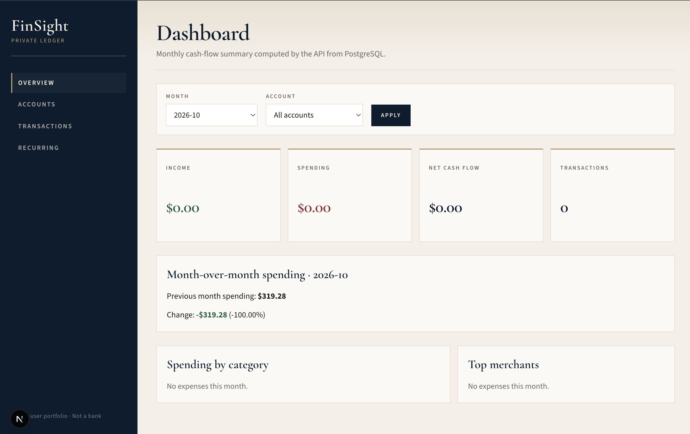
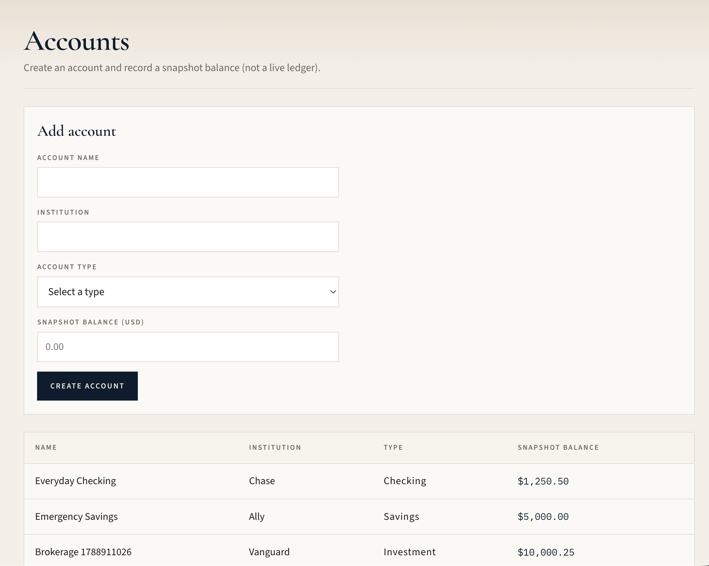
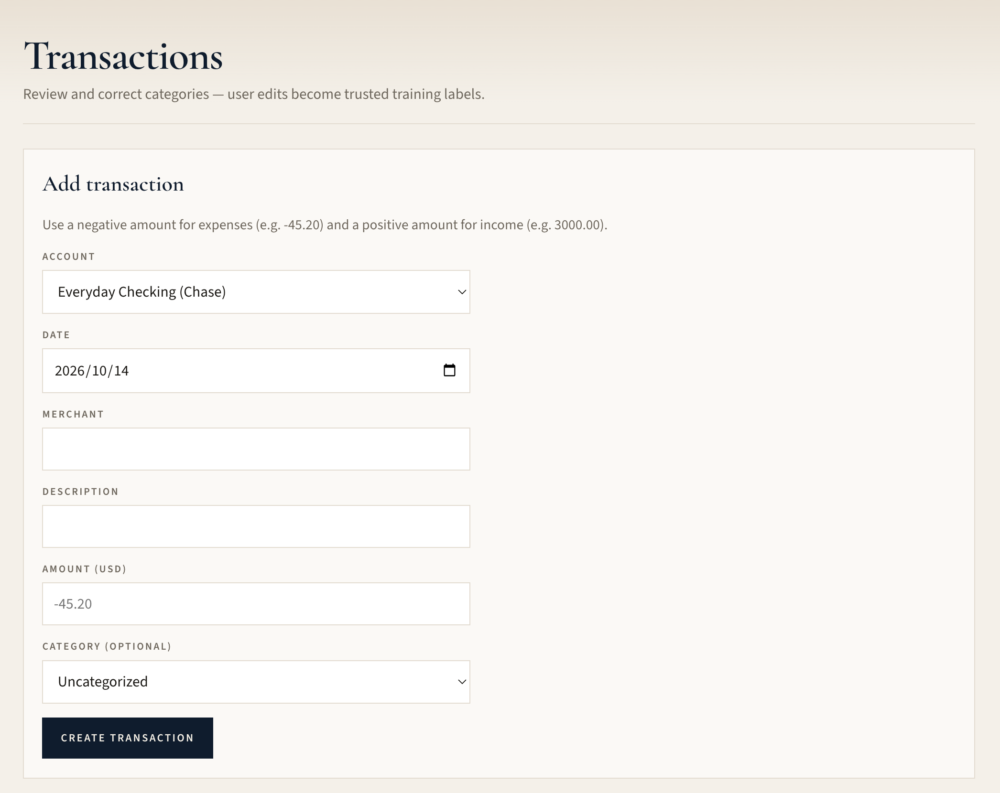

Case Study · Financial Analytics / Product Engineering
FinSight
Building Financial Intelligence You Can Trust
Built a personal finance platform combining transaction analytics, recurring-payment detection, and human-in-the-loop ML evaluation, prioritizing trustworthy insights over premature automation.
Independent Developer / Product Owner
The Problem
Transform fragmented transaction histories into useful spending and cash-flow insights — without silent import failures, opaque categories, or ML claims that look strong only under the wrong evaluation setup.

What I Built
- Next.js + TypeScript frontend
- FastAPI backend
- PostgreSQL database with SQLAlchemy
- Accounts and transactions with decimal-safe money handling
- CSV ingestion with validation, partial success, and deduplication
- SQL-side financial analytics (income, spending, MoM, category/merchant breakdowns)
- Category review and correction with explicit provenance
- Calendar-aware recurring-payment detection

ML Experiment
Offline TF-IDF + logistic regression categorization lived under a separate experiment path. Evaluation compared random stratified splits against merchant-grouped splits.
Merchant-grouped evaluation identified merchant leakage: random splits inflated performance when the same merchant appeared in both train and test.
The ML classifier is not integrated into the live application. It is an offline experiment only — not a shipped feature.

The Decision Not to Ship
Grouped evaluation exposed weak generalization. Real labeled data remained insufficient for trustworthy training. I chose human review and category correction over unreliable automation — user edits become trusted labels instead of silent model guesses.
Lessons
Product decisions should be grounded in evidence, not the appearance of AI sophistication. Keeping ML offline preserved user trust and made the shipped product’s limits explicit.